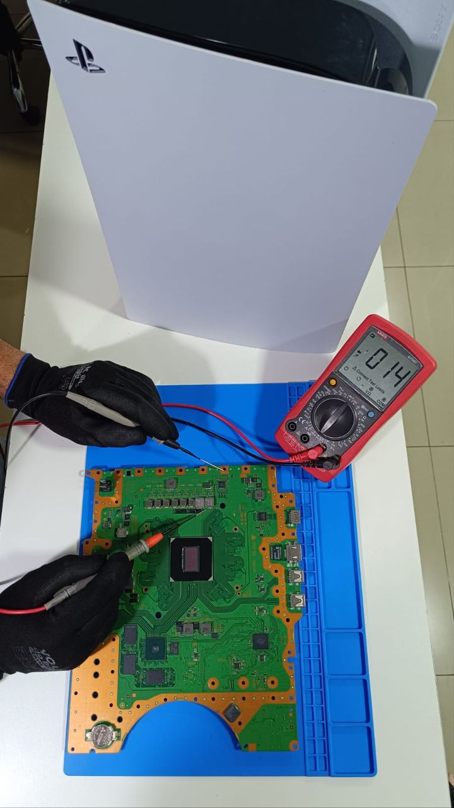
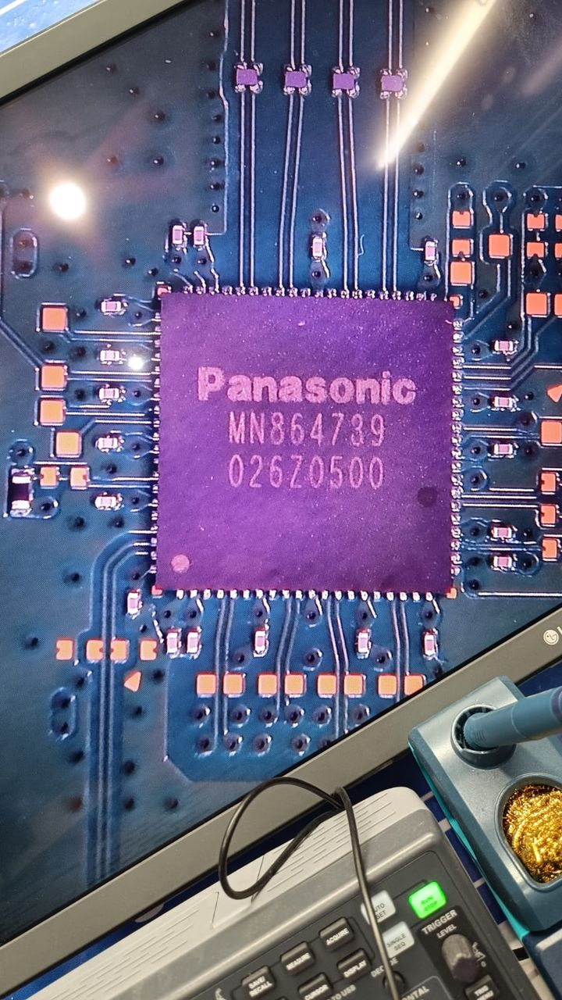
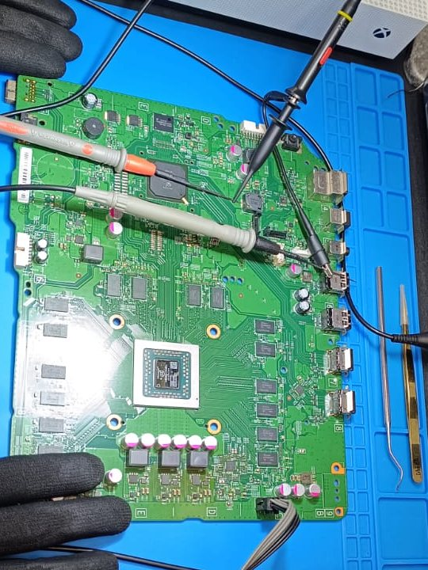
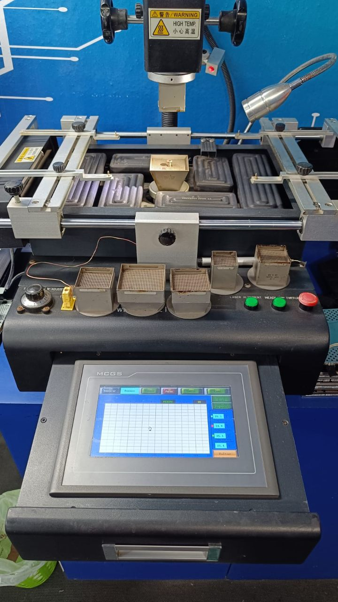
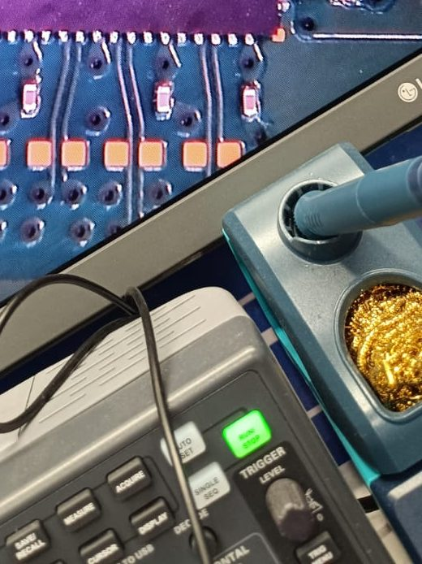
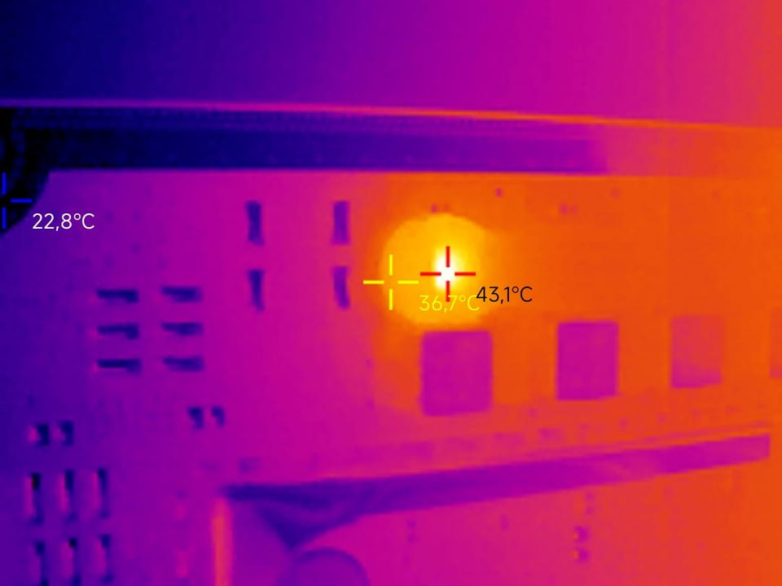
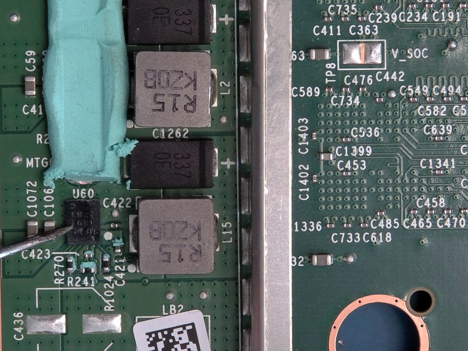
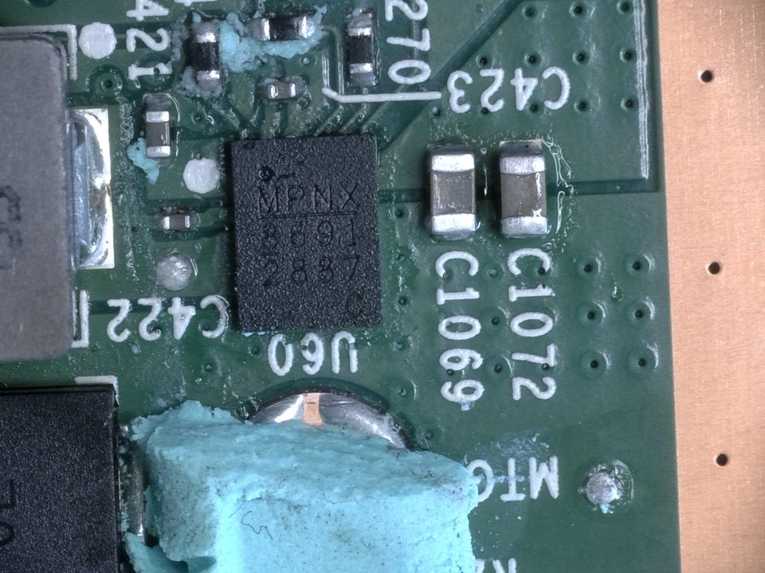
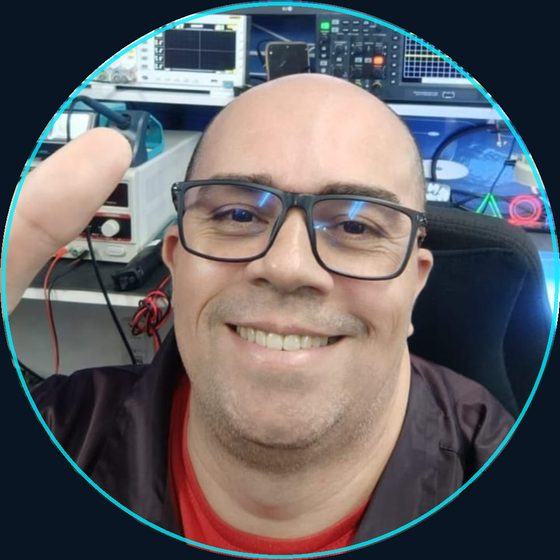

PlayStation PS3, PS4 e PS5
Falhas de placa-mãe, porta HDMI, chip APU, leitura de disco e sobreaquecimento, em todas as gerações.
Técnico especializado em Mangualde, com 25 anos de experiência em reparação de consolas PlayStation e Xbox, diagnóstico de placas e micro-soldadura BGA/SMD.

Diagnóstico ao nível do componente, com equipamento de laboratório. Primeiro encontramos a causa, depois propomos a reparação.

Falhas de placa-mãe, porta HDMI, chip APU, leitura de disco e sobreaquecimento, em todas as gerações.

Xbox One FAT, One S, Series S e Series X. Diagnóstico com osciloscópio, chips BGA, HDMI e arrefecimento.

Reballing e substituição de chips BGA em estação de infravermelhos, reconstrução de pistas e soldadura SMD de precisão.

Diagnóstico e reparação de hardware eletrónico com microscópio digital 4K, câmara térmica, osciloscópio e multímetro de precisão.
Em reparação de eletrónica e consolas.
Descontado no valor da reparação se o orçamento for aprovado.
Entrega em mão em Mangualde ou envio pelos correios.
Fotografia ou vídeo do problema pelo WhatsApp, com o modelo do equipamento.
Respondemos com uma primeira leitura do problema e dos próximos passos.
Entrega em mão em Mangualde ou envio pelos CTT, de qualquer ponto do país.
Diagnóstico de bancada (10 €) e orçamento final. Só reparamos depois da sua aprovação.



O mesmo método da bancada, aplicado ao digital da sua empresa: perceber o problema antes de propor a solução. Para comércio, serviços e pequenas indústrias da região.
Pedir proposta no WhatsApp
Sou Allan Xavier, técnico especializado em eletrónica com 25 anos de experiência. Fui fundador e técnico-chefe da Medic Games, assistência técnica em Salvador, Brasil.
Sou formado como Técnico em Mecatrónica e hoje estou em Mangualde, Portugal, ao dispor dos clientes com o mesmo rigor técnico.
Eu é que agradeço pela forma super profissional como trabalham. Aqui em Portugal não conheço nenhum técnico com tanto profissionalismo. Muito obrigado. Até breve.
Bruno, Portugal
Quero agradecer muito o quão profissional foi comigo. O meu PS estava parado há três meses, levei a duas assistências e ninguém resolveu o problema da minha consola.
Daniel, Coimbra
Envie uma foto do seu equipamento pelo WhatsApp e receba uma primeira indicação do problema.
Diagnóstico: 10 €, descontados na reparação se o orçamento for aprovado. Se o orçamento não for aprovado ou o equipamento não tiver reparação, o valor do diagnóstico não é reembolsado, pois cobre o tempo de análise técnica.